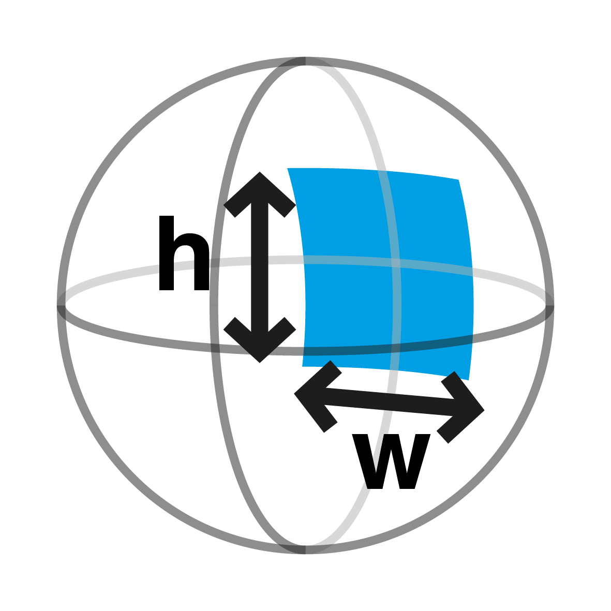
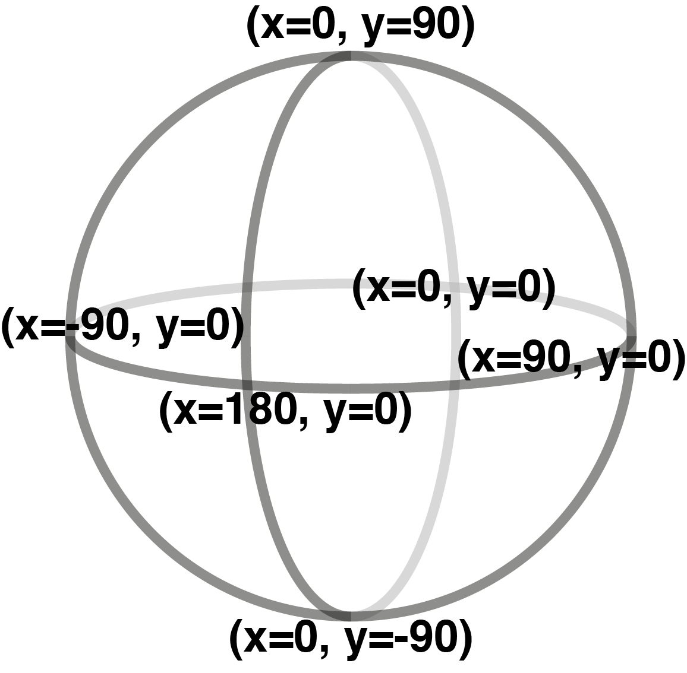
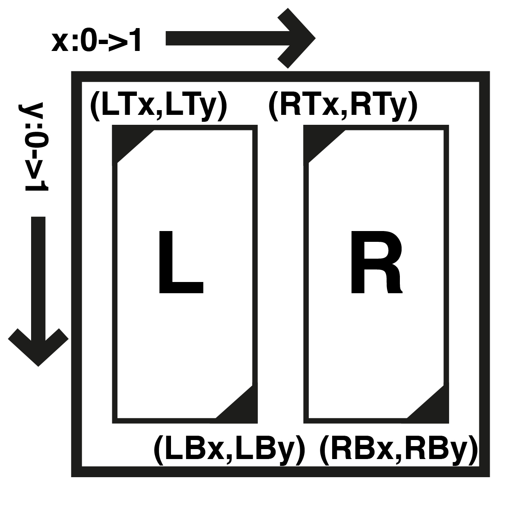

vrEmbed is an easy-to-use tool to create a VR experience from photos. You can use it to take an existing image:
..and turn it into an interactive VR experience:
The above was achieved using a simple, one-line embed code:
<a class="vrEmbedPhoto" src="src/assets/rheingauer_dom.jpg" isStereo="false" sphereParams="360,180,0,0"></a><script async src="//bhautikj.github.io/vrEmbed/vrEmbed.min.js" charset="utf-8"></div></script>
...that you can use practically anywhere online that allows you to cut-and-paste HTML. Slightly more advanced users can create scenes with multiple images and soon, multiple scenes tied together into a story.
You can even take 3D image pairs and turn them into 3D VR:
..and turn it into an interactive VR experience:
How to create a vrEmbed pano
The quick mode for vrEmbed allows you to quickly wrap a single image to turn it into an interactive VR scene.
The basic format of a vrEmbed goes like this:
<a class="vrEmbedPhoto" src="foo.jpg" isStereo="false" sphereParams="w,h,x,y" texParams="LTx,LTy,LBx,LBy,RTx,RTy,RBx,RBy"></a><script async src="//bhautikj.github.io/vrEmbed/vrEmbed.min.js" charset="utf-8"></div></script>
Alternatively, if you don't want an embed code and just want a single URL to turn your image into an interactive scene, you can format your URL like this:
https://bhautikj.github.io/vrEmbed/?src=foo.jpg&isStereo=false&sphereParams=w,h,x,y&texParams=LTx,LTy,LBx,LBy,RTx,RTy,RBx,RBy
Needed: src
src="foo.jpg"
Simply point the code at where your image lives online.
Needed: isStereo
isStereo="false"
If your image is a composite of left and right images, set this to true otherwise just leave it as false.
Needed: sphereParams
sphereParams="w,h,x,y"

h and w refer to the vertical height and horizontal width of your image on the sphere, in degrees. If you have a full, 360 by 180 panorama then w=360 and h=180.

x and y refer to where on the sphere the centre of your image is. x goes from left to right from -180 to 180; 0 is stright ahead of the viewer, -90 is directly to the left and 90 is directly to the right. y goes from top to bottom -90 to 90; 0 is straight ahead of the viewer, -90 is directly above and 90 is directly below.
Optional: texParams
texParams="LTx,LTy,LBx,LBy,RTx,RTy,RBx,RBy"

More advanced users can set up their embed with a 3D (i.e. stereo) image. For vrEmbed we currently assume that the left and right images combined together into the same image, typically side-by-side or top-and-bottom. We need to tell vrEmbed where the left and right images are. We measure the x-coordinate from left to right going from 0.0 to 1.0, amd the y-coordinate from top to bottom also going from 0.0 to 1.0. Note that at the moment we do not support pixel coordinates - these are floating-point values (this may change depending on need).
We define (LTx,LTy) as the top-left coordinate of the left image, (LBx,LBy) as the bottom-right coordinate of the left image. (RTx,RTy) and (RBx,RBy) correspondingly match the right image.
Optional: width and height
You can set the width and height of the embed using width and height parameters, which both need to be set (e.g. width=640px height=480px); otherwise the embed defaults to creating a 16:9 ratio embed that takes up the width of the container.